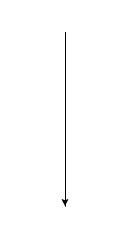
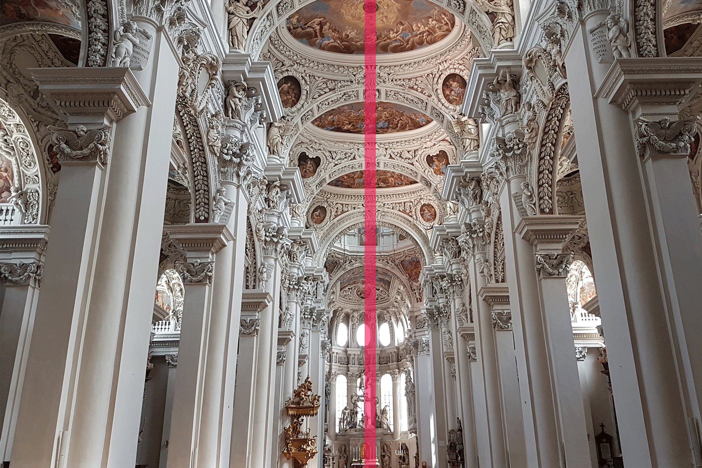
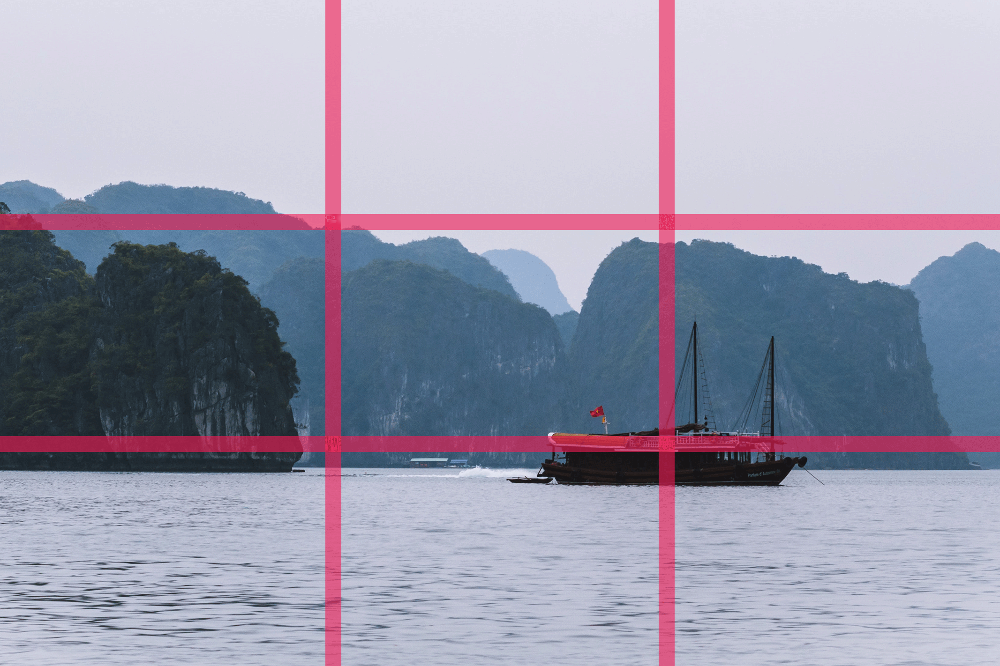
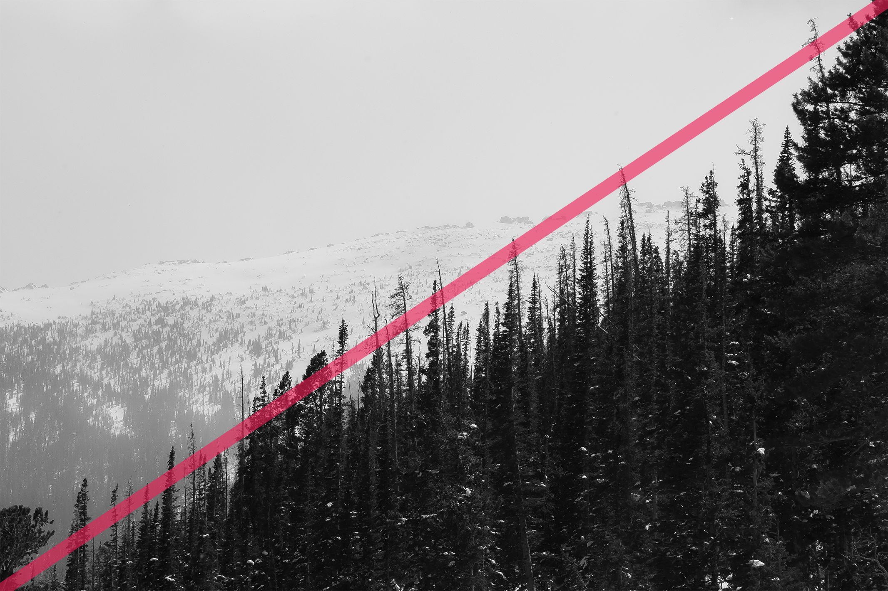

| before | |||
|---|---|---|---|
|  | |||
| after |
| before | |||
|---|---|---|---|
| after |
操作方法
| ｓｔｅｐ1 | ｓｔｅｐ2 | ｓｔｅｐ3 |
| アルバムから 写真を選択 ｏｒ カメラを起動する |
構図判定ボタンで 画像を解析 |
構図決定！ |
操作方法
| ｓｔｅｐ1 アルバムから 写真を選択 or カメラを起動する。 |
|
ｓｔｅｐ2 構図判定ボタンで 画像を解析。 |
|
ｓｔｅｐ3 構図決定！ |
使用者の声
使用者の声
構図について
| ① 日の丸構図 | ③ シンメトリー構図 |
|---|---|
|  | |
| ② 三分割構図 | ④ 対角線構図 |
|  |  |
構図とは
| ① 日の丸構図 | ③ シンメトリー構図 |
|---|---|
| ② 三分割構図 | ④ 対角線構図 |
Ｑ＆Ａ
Ｑ＆Ａ